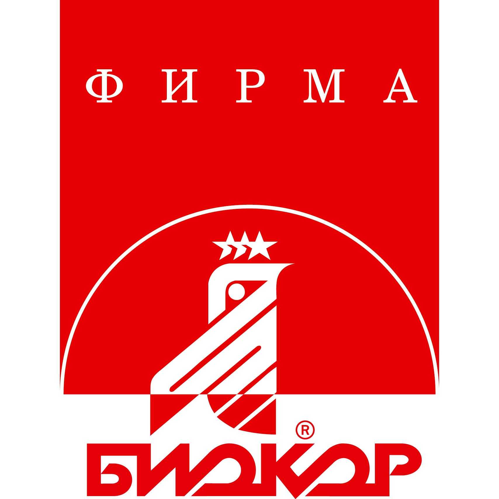

Фирма «Биокор» уже 30 лет специализируется на разработке и производстве биологически активных добавок к пище и продуктов здорового питания. «Биокор» не без основания можно считать пионером этого направления.Предприятие, идейным вдохновителем и создателем которого был Чижов Владимир Петрович, основано в 1991 году. На данный момент управляющий – Сергей Владимирович Чижов. В настоящее время Фирма «Биокор» – это 300 квалифицированных сотрудников, обширные производственные площади и высокопроизводительные линии, выполняющие полный цикл производства от обработки сырья до упаковки готовой продукции.«Биокор» – ведущий производитель биологически активных добавок к пище. Среди зарегистрированных БАД насчитывается более 60 наименований, и все они производятся в соответствии с установленными требованиями санитарных норм и правил. Начиная с 2002 года Фирма «Биокор» выращивает сырье для собственного производства. Осенью 2004 года в составе группы компаний «Биокор» было создано Общество с ограниченной ответственностью Агрофирма «Биокор-С».